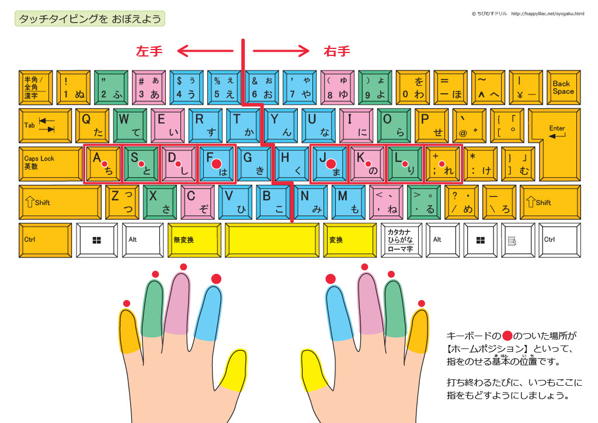

1 タッチタイピング習得法
この記事ではタッチタイピングについてまとめる。本記事は初めにタッチタイピングの概要を示す。次に具体的な練習方法や意識した方が良いことについて主張し、最後に私がタッチタイピングを練習する上でおすすめのサイトやゲームを紹介しまとめる。
1.1 タッチタイピングとは
タッチタイピングとは「キーボードを見ずに画面だけを見て文字を入力すること」である。日本では”ブラインドタッチ”と呼ばれることも多い。どちらも同じ意味であるが、ブラインドタッチは和製英語であり、タッチタイピング(Touch typing)が一般的である。また、ブラインドという言葉には「盲目」という意味が含まれるため、配慮も兼ねてタッチタイピングと表した方が無難である。
この記事ではタッチタイピングについてどうやったら習得できるのかを私の経験を踏まえて記述していく。よって科学的な再現性やデータに裏打ちされた根拠があるわけではないことに注意されたい。私がこの記事に込める思いとして、これを読めば一瞬でタッチタイピングができるようになるとか、練習要らずとかそういうことではなく、これからタッチタイピングを身につけようと思う方々に対し、私が効果的だと考える練習方法を提示することにある。要するに、タッチタイピングを習得する上で、無駄な時間や労力をかけないようにしてほしいということである。なのでこの記事は、タッチタイピングができるようになりたいという思いを持つ、意欲あふれた人に対しての道標になればいいと考えている。
ところで、なぜこの記事を書こうと思ったかについて簡単に説明しておきたい。これは個人的な話だが、学生をはじめ、私の周りにはタッチタイピングができないという人が少なくない。現代は、スマートフォンの普及により、“フリック入力”で文字を打つ習慣が定着している。もちろんフリック入力ができることに越したことはないし、私はフリック入力ができないのでできる人たちを尊敬している。しかし、フリック入力だけでは困る場面が出てくる。少なくともこの記事を読んでいるということは、あなたが自身の生活の中において、タイピングの方が有用だと感じる場面があり、どうやったらタッチタイピングができるようになるかという疑問を抱いたからではないだろうか。大学でのレポートの作成や業務の報告書、プログラミングなどのコーディングにおいても、キーボードの方が入力しやすいのではないだろうか。
タッチタイピングを習得することで得られるメリットとして真っ先に挙げられるのは、やはり文字を速く打てることである。しかし、純粋な入力スピードだけで言えば、先にあげたフリック入力でも十分に到達可能であろう。
私が考える最大のメリットは、速さではなく別の画面や資料を見ながら文字を打てることにある。手元を見るタイピングやフリック入力では、どうしても、対象を見る、手元を見て打つ、画面で確認する、という視線の往復が生じる。一方、タッチタイピングが身につけば、視線を資料や別モニターに固定したまま、思考を途切れさせることなく文字を打ち込むことができる。この視線の自由こそが、タッチタイピングがもたらす最も大きな恩恵である。
プログラミングにおいてはマウスを操作する必要がなくなる。これはキーバインディングにも関係するが、目線を手元から離してキーボードを操作できるため、わざわざマウスに手を伸ばしてカーソルを動かさなくても良くなるのである。こんなに便利なのに私の周りではしばしばできない人を見かけるのが、なんとももったいなく、心苦しい限りである。なので少しでもタッチタイピングができる人が増えればいいなと考え、この記事を執筆する。
1.2 タッチタイピングの練習に取り組むに際して
この節では私が考える、タッチタイピングの練習に際しての心構えについて簡単に触れる。世の中にはタッチタイピングの練習方法についての記事や動画がありふれており、基本的には練習方法に困らないと考えられるが、その心構えや指の使い方に関して厳しく言及しているものは少ないのではないだろうか。
まずタッチタイピングを習得するためには練習しないといけない。これはどんなことでもそうであろう。たとえば、ボールを触ったことない人がいきなりバスケットボールを持ってシュートをしてもリングになかなか入らないように、キーボードに慣れていない人がいきなりタッチタイピングをすることはできない。
そしてタッチタイピングを行う上で重要なことは10本全ての指を使うことである。たまに、小指を使わなくてもいいというような練習方法を目にするが、これはあまり行わない方が良い。実際指の数を多く使えた方が1秒あたりのタイプ数も増えるので、速く文字を打つことができるだろう。そして、キーボードのマップを覚える上でも小指は重要である。バックスペースやエンターキーなど小指で打つ方が、ホームポジションに戻りやすいし、ミスタイプも少なくなるはずである。やはりここでは先人に倣って、マニュアルに沿って練習した方が良いだろう。小指なんて使えないという人も多いだろうが、これは練習していくうちに慣れるものである。Figure 1 にタッチタイピングにおける指の割り当てを示す。

理解することとできることは必ずしも順序があるものではないし、理論的理解が不十分でも実用はできる。たとえば初めて自転車に乗れるようになった時のことを思い出してほしい。初めて補助輪を外した時、どうやって乗れるようになっただろうか。おそらく、何度もペダルを漕いでいるうちに、感覚を掴んで乗れるようになったはずだ。そこには、自転車を乗ることに対しての理論的理解などはなかったはずである。つまり、1秒後にはここの足を動かして、次は逆で、バランスはこの筋肉を使って、といった頭での理解やマニュアル化などはなかっただろう。仕組みを理論的に説明できなくても、練習を繰り返せば体は勝手に動いてくれる。これはタイピングも同じことである。
ピアニストは演奏する時に鍵盤をいちいち確認はしないし、一流のタッチタイピングスキルを持っている人はキーボードの刻印なんて必要ない。要するに、練習が大事で、そこには理論的理解などは実用する上では必要ないということである。
次はキーボードの種類についてである。日本語キーボードかUSキーボードのどちらを使えば良いだろうか。これは別にどちらでも問題ない。強いて言えば、日本で仕事をしていく予定であれば日本語キーボードで十分であるし、より広くみるならUSキーボードの方が良いだろう。私はUSキーボードを使用している。ここは好みでもあるので自分でこだわるのが良いだろう。
タッチタイピングを練習していくといくつか壁にぶつかる。その一つとして挙げられるのが”RTYU”のタイプである。これらのキーは人差し指に対応しているのだが、初めはここのタイプミスが多い。故にストレスが溜まる。これは仕方のないことなので割り切って取り組んだ方が良い。嫌になったら投げ出してもいいし、気分転換に別の作業をしても構わない。とにかく、タイピング練習は毎日続けることが大切なのである。1日でもサボると2日目の自分に戻ると考えた方が良い。とにかく毎日、まずは2週間連続、1日5分からでも良いのでパソコンの前に座ってキーボードを触ることが大切である。
1.3 タッチタイピングの練習法
1.3.1 キーボードは敵？？
タッチタイピングにおいて最も重要な要素がある。それは、練習中には意地でもキーボードを見ないことである。これはマニュアル車の運転と同じで、運転中に目線をシフトレバーに向けてシフトチェンジを行うとその一瞬のよそ見でも事故につながるかもしれない。だから、シフトレバーには視線を向けずにシフトチェンジできるようになるまで練習することが一般的である。タイピングにおいて手元を見てしまうデメリットは、そもそも入力されていないことに気づかないことや、タイプミス、半角・全角入力のミスを確認できないことにある。よって、タイピング中はキーボードを見ず、画面を見ながらタイプすることが大切である。
では、いきなりキーボードを見ずにタイピングができるだろうか。実際、タッチタイピングを習得しようとする者がはじめから正確にキーボードを見ずに打つことはできない。それだと、キーボードを見ずにタイプすることが不可能に感じられるかもしれない。しかし、我々は画面を見ることはできる。つまり、画面に自分が打っているキーマップが表示されていれば、それを確認すれば良い。そのため、後述する通り、最初の練習はキーマップが表示されるゲームやアプリケーションがおすすめである。
1.3.2 効率的なタイピング
効率的なタイピングをする上でも重要なことがある。それは、10本全ての指を使うということである。前半にも述べたと思うが、せっかく10本の指があるのにそれを使わないなんて手段はない。黙って、10本の指を矯正しながらタイピングを練習してほしい。タッチタイピングができるようになった時、世界が変わって見えてくるだろう。小指を使わない人をたまに見かけるがそれは邪道であると私は考えている。というのも、小指があれば、CtrlキーやOptionキー、Shiftキー、Windowsなどにおいては、AltはCapsLock（私はwindows userではないので使うかわからないが）等を小指でタイプすることができるので、キーバインディングを使っているユーザーにとってはこれほど嬉しいものはないだろう。あと、大幅に手を動かす必要がないので、ホームポジションに戻りやすく、ミスタイプが少なくなることもメリットである。
効率的に身につけることも重要である。筆者も含め、読者は日本語ネイティブであると想定できるので、まずは日本語をタイプできるようになるところから始める。順序としては、
- a, i, u, e, oの母音を見ずに打てるようになる。
- その他子音を打てるようになる。
- 濁点、半濁点、句読点を打てるようになる。
- 短い単語を打てるようになる。
- 短い文章を打てるようになる。
- 記号（かっこなど）を含んだ文章を打てるようになる。
を意識すると良いと考える。そもそも、ローマ字を覚えていないユーザについてはそちらを復習していただきたい。
一語一語打った後に必ずホームポジションに指を戻すことも重要である。ホームポジションとは左手人差し指が”F”、右手人差し指が”J”にくるような指の配置のことをいう。このホームポジションを目安にキーマップを練習するうちに覚えるように意識する。毎晩寝る前に、この指はこのキーと頭の中で復習するのもいいだろう。とにかく隙があればキーマップと指の配置を対応させるイメージを持つことが重要であり、意識によって人の行動は変わると私は考える。
ここまで練習すれば、ある程度日本語が打てるようになっていると考えられる。次に英単語を練習するとよい。日本語は必ず母音に帰ってくるが、英語などはそうではないので別の慣れが必要である。しかし、ある程度のキーマップは頭に入っているので、はじめの苦労に比べれば安いものである。
効率的なタイピングを身につける上で、元々自分が行なっていたタイプ方法は一度記憶から消し去って、新しくインプットした方が良い。自己流のタイプ方法は悪癖であり、最大の敵である。正しい方法を練習しているにもかかわらず、癖が抜けないなんてことは珍しくない。これを防ぐためには常に正しいタイピングを意識する必要がある。要は練習期間においては、どれだけタイプが遅かろうが、イライラが募ろうが、精神的に苦しかろうが、必ず正しいタイピングを意識する。やはり今までのタイピングの方が矯正をはじめた頃よりも速いので、そちらを使いたくなってしまう。これは人間である以上仕方のないことであり、意志の弱い生き物であることを悔いた方がいいだろう。ここは自分に厳しくなるポイントである。これができるかできないかで、タッチタイピングを習得できる効率性が変わると考えている。
タイピングにおいてはミスタイプを減らすことが重要である。ミスタイプを減らすことで結果的に速いタイピングへとつながる。速くタイプしようとするがあまり、ミスタイプを連発しているようではいけない。タイピングには丁寧さも求められるのである。なので、練習中にまたミスしたと自分自身にイライラを向けるのではなく、自身がミスしやすい場所を練習の中から分析して、意識して改善していく姿勢が大切である。
1.3.3 時間と期間
次は時間と期間についてである。時間がある日は集中力がある限り練習すれば良いと考える。時間がない日は、1日5分でも良いのでキーボードを触ることを目標とする。私のおすすめは、まず1日目である程度キーマップを覚えられるまで練習し、あとはひたすら単語や文章を打つ方が良い。やはり人によって間違う癖は違うしそこは自分と相談しながら練習する必要があるが、キーマップを覚えることが一番の苦痛であるのでそこを早めに終わらせてしまう方が良いだろう。それさえ覚えてしまえばあとはこっちのものである。再三申し上げている通り、タッチタイピングを習得するにはサボらないことが重要である。覚えるのが得意なひとは2週間もあれば実用的なタッチタイピングを身につけることができるだろう。1ヶ月も毎日キーボードに触れていればかなり速くタイプできるようになっているはずだ。もちろん、常に正しいタイピングを意識すればの話である。なので私は、正しいキーマップを1日目で覚えてしまうことを推奨する。そこに時間をかけると作業ができないし、自己流のタイピングに戻ってはいけないという制約がある中では、イライラすることが目に見えているからだ。
1.4 おすすめのタイピング練習アプリ
最後に私がおすすめするタイピング練習に使えるゲームやサイトについてまとめる。基本的におすすめなのは以下の3つである。
基本的には上から順番に試していただきたい。
勇者タイピングはRPG感覚で遊べるタイピング練習ゲームである。まずゲーム感覚で遊べるため、飽きにくいところが良いポイントである。さらに、画面にキーマップも表示され、基礎から文章入力へと段階的に構成されているため、練習には非常に最適なサイトである。まずはこのサイトでタイピングの基礎を身につけてから色々なものにチャレンジした方が良いと考える。
寿司打もタイピング練習用のゲームであるが少し注意が必要である。タイピング初心者が一番初めにこのサイトで練習することは遠回りになる可能性がある。というのも、このゲームはキーマップが画面に表示されていない。加えて、時間制限がついており、焦ってしまいミスタイプが増えると考えられる。ミスタイプを減らして速度を上げることを目標にしている初学者についてはこれはあまり良い影響を与えないのではないだろうか。しかし、ゲームとしては面白く、ある程度タイピングができるようになった人にとっては時間制限というほどよい負荷をかけることができるので、タイピングスキルの向上という目的で活用するならうってつけである。
タイピング検定模擬試験はタイピング検定のレベル別に内容が構成されており、自分自身のタイピングスキルがどの程度のものなのかを可視化するときに役立つだろう。こちらもある程度タイピングができるようになってから活用すると良い。
以上3つが私のおすすめのサイトであるが、特におすすめなのは勇者タイピングである。私自身もこの勇者タイピングを活用してタッチタイピングができるようになったと言っても過言ではない。ぜひこれを読んでいる読者の皆様にも一度試していただき、タッチタイピングというスキルを身につけてほしい。
1.5 さいごに
今回はタッチタイピング習得法というテーマで、私自身の経験からタイピングについてさまざまなことをまとめた。もちろんこの記事が完全に正しいものではないし、間違ったことも含んでいるかもしれない。しかし、タッチタイピングを習得したいがどのように練習すれば良いかわからないという迷える子羊たちの道標位にはなったのではないだろうか。ここまで読んでくださった読者の皆様には感謝申し上げる。そして、ぜひタッチタイピングを身につけて、学業や仕事に活かし、人生を豊かにしていただきたい。Good luck!